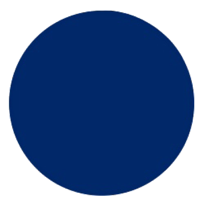
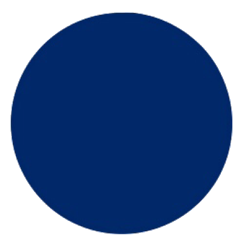

อาเซียน (ASEAN) เกิดจากการรวมตัวกันของ 10 ประเทศ อันได้แก่ มาเลเซีย, พม่า, กัมพูชา, ลาว, ไทย, สิงคโปร์, เวียดนาม, บรูไนดารุส-ซาลาม, ฟิลิปปินส์ และอินโดนีเซีย ซึ่งรายนามประเทศเหล่านี้เป็นประเทศที่ตั้งอยู่ในทวีปเอเชียตะวันออกเฉียงใต้ทั้งสิ้น โดยอาเซียน มีชื่อเรียกเต็มๆ ว่า "Association of Southeast Asian Nations" หรือ "สมาคมประชาชาติแห่งเอเชียตะวันออกเฉียงใต้"
สมาคมประชาชาติแห่งเอเชียตะวันออกเฉียงใต้ ถือกำเนิดขึ้นโดย "ปฏิญญากรุงเทพ" (Bangkok Declaration) หรือ "ปฏิญญาอาเซียน" (ASEAN Declaration) เมื่อวันที่ 8 สิงหาคม 2510 โดยมีสมาชิกเริ่มแรกเพียง 5 ประเทศ ได้แก่ อินโดนีเซีย, มาเลเซีย, ฟิลิปปินส์, สิงคโปร์ และไทย มีจุดประสงค์เพื่อส่งเสริมความร่วมมือทางด้านการเมือง เศรษฐกิจและการค้าระหว่างประเทศในแถบภูมิภาคเอเชียตะวันออกเฉียงใต้ด้วยกันเอง ภายหลังจึงได้มีอีก 5 ประเทศสมาชิกเข้าร่วมเพิ่มเติม จึงทำให้ "อาเซียน" มีสมาชิกเป็น 10 ประเทศดังเช่นในปัจจุบัน
ปัจจุบัน บริบททางการเมือง เศรษฐกิจ และสังคม รวมทั้งความสัมพันธ์ระหว่างประเทศได้เปลี่ยนแปลงไปอย่างมาก ทำให้อาเซียนต้องเผชิญ สิ่งท้าทายใหม่ๆ อาทิ โรคระบาด การก่อการร้าย ยาเสพติด การค้ามนุษย์ สิ่งแวดล้อม ภัยพิบัติ อีกทั้ง ยังมีความจำเป็นต้องรวมตัวกันเพื่อเพิ่มอำนาจต่อรองและขีดความสามารถทางการแข่งขันกับประเทศในภูมิภาคใกล้เคียง และในเวทีระหว่างประเทศ ผู้นำอาเซียนจึงเห็นพ้องกันว่า อาเซียนควรจะร่วมมือกันให้เหนียวแน่น เข้มแข็ง และมั่นคงยิ่งขึ้น จึงได้ประกาศ “ปฏิญญาว่าด้วยความร่วมมือในอาเซียน ฉบับที่ 2” (Declaration of ASEAN Concord II) ซึ่งกำหนดให้มีการสร้างประชาคมอาเซียนที่ประกอบไปด้วย 3 เสาหลัก ได้แก่
ซึ่งต่อมาผู้นำอาเซียนได้ตกลงให้มีการจัดตั้งประชาคมอาเซียนให้แล้วเสร็จเร็วขึ้นมาเป็นภายในปี 2558
ประชาคมอาเซียน (ASEAN Community) คือ การรวมตัวของกลุ่มประเทศสมาชิกอาเซียนให้เป็นชุมชนที่มีความแข็งแกร่ง สามารถสร้างโอกาสและรับมือส่งท้าท้าย ทั้งด้านการเมืองความมั่นคง เศรษฐกิจ และภัยคุกคามรูปแบบใหม่ โดยสมาชิกในชุมชนมีสภาพความเป็นอยู่ที่ดี สามารถประกอบกิจกรรมทางเศรษฐกิจได้อย่างสะดวกมากยิ่งขึ้น และสมาชิก ในชุมชนมีความรู้สึกเป็นอันหนึ่งอันเดียวกัน
จุดประสงค์หลักของอาเซียน
ปฏิญญากรุงเทพฯ ได้ระบุวัตถุประสงค์สำคัญ 7 ประการของการจัดตั้งอาเซียน ได้แก่
"หนึ่งวิสัยทัศน์ หนึ่งเอกลักษณ์ หนึ่งประชาคม”
(One Vision, One Identity, One Community)
อาเซียนจะต้องส่งเสริมอัตลักษณ์ร่วมกันของตนและความรู้สึกเป็นเจ้าของในหมู่ประชาชนของตน เพื่อให้บรรลุชะตา เป้าหมาย และคุณค่าร่วมกันของอาเซียน

สัญลักษณ์อาเซียน คือ ดวงตราอาเซียนเป็นรูปมัดรวงข้าว สีเหลืองบนพื้นวงกลมสีแดงล้อมรอบด้วยวงกลมสีขาว และสีน้ำเงิน
รวงข้าวสีเหลือง 10 ต้น หมายถึง ความใฝ่ฝันของบรรดาสมาชิกในเอเซียตะวันออกเฉียงใต้ทั้ง 10 ประเทศ
ให้มีอาเซียนที่ผูกพันกันอย่างมีมิตรภาพและเป็นหนึ่งเดียว
วงกลม เป็นสัญลักษณ์แสดงถึงเอกภาพของอาเซียน
ตัวอักษรคำว่า asean สีน้ำเงิน อยู่ใต้ภาพรวงข้าว แสดงถึงความมุ่งมั่นที่จะทำงานร่วมกัน
เพื่อความมั่นคง สันติภพ เอกภาพ และความก้าวหน้าของประเทศสมาชิกอาเซียน
ซึ่งนอกจากตราสัญลักษณ์ที่จะช่วยสร้างความเข้าใจในความเป็นอาเซียนแล้ว สีที่ใช้ก็ยังมีส่วนที่ช่วยเสริมให้อาเซียนมีพลัง สามารถดำเนินไปได้ด้วยความอดทน และมีความเชื่อมั่นซึ่งกันและกัน


 

สีเหลือง หมายถึง ความเจริญรุ่งเรือง
สีแดง หมายถึง ความกล้าหาญและการมีพลวัติ
สีขาว หมายถึง ความบริสุทธิ์
สีน้ำเงิน หมายถึง สันติภาพและความมั่นคง
ธงอาเซียนเป็นธงพื้นสีน้ำเงิน มีดวงตราอาเซียนอยู่ตรงกลาง แสดงถึงเสถียรภาพ สันติภาพ ความสามัคคี และพลวัตของอาเซียน
สีของธงประกอบด้วย สีน้ำเงิน สีแดง สีขาว และสีเหลือง ซึ่งเป็นสีหลักในธงชาติของบรรดาประเทศสมาชิกของอาเซียนทั้งหมด
ให้วันที่ 8 สิงหาคม ของทุกปี เป็นวันอาเซียน
คือ เพลง ASEAN WAY
กฎบัตรอาเซียน กำหนดให้อาเซียนและประเทศสมาชิกปฏิบัติตามหลักการดังต่อไปนี้